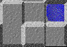
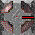
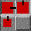
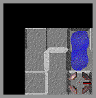
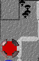
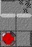
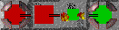

Objectives and Rules
As in any war, there really aren't any rules except one: Destroy or be destroyed. This is also true in Europa: anything goes. You can't be penalized (except perhaps by an opponent with a score to settle) and it is never improper protocol to attack somebody with the intent to knock them out. That is the whole purpose of the game. There are some details that make the medium of war slightly unique, however, and these are described below. Always remember the fundamental objective in Europa: you must seek out and absolutely destroy every other player on the board. The game will not end until either all players except one have surrendered or been obliterated from the surface of the planet.
Terrain

The surface of Europa, unfortunately, is not perfectly flat. The satellite console displays the varying levels of land in square blocks due to the limited resolution of the nanobot sensors. An imaginary light source to the upper left creates hilights and shadows. The rises and falls of the terrain are perceived visually by highlights and shadows with respect to this light source. There are also pools of water littering the surface of Europa--water unfrozen from the surface of the moon from the endless nanobot battles which cover its surface. The nanobots, as powerful and complex as they are, are not capable of traveling into the pools of water, and will not enter the water even if instructed to.Cities
When you first land on the surface of Europa, you are actually landing a number of nanobot production facilities (cities) which immediately begin producing nanobots. The cities will continually produce nanobots as long as the city has not been saturated, or filled, with them. The cities are the source of life for a company wishing to do battle on Europa. With no cities, you have no way of producing more nanobots. Note, however, that if you lose all of your nanobot production facilities during a game, you can still recapture another production facility with your remaining nanobots.
Pipes

The nanobots are directed by you from the orbit of the moon via pipes. You instruct the nanobots to build a pipe in cell in a particular direction. Nanobot troops immediately begin to flow from the source cell into the destination cell (In the example image above a pipe is moving troops eastward out of a city). If the destination cell is empty, then your nanobots will begin to occupy and fill the square. If, however, the destination cell is occupied by enemy nanobot troops, then a struggle will erupt between the two groups of competing nanobots. The nanobots will automatically organize themselves into various weapons of war and begin fighting each other. The pipes are represented graphically by lines originating near the center of a cell and pointing in the direction of the desired troops flow. Also note that troop flow is assisted and impeded by the terrain--troops will flow easily down a hill, but not so easily up a hill.Decay
Troops that are in a cell that is not fed by any pipes slowly die at a rate of one troop per update. This makes protecting your pipes from paratroop attacks even more important, since a single paratroop at the back of an empty pipeline can cause the whole pipe to vanish! Two squares pointing at each other can keep each other alive indefinitely: no city is required to maintain the troops, just supply from an adjacent square.
Troops

Only a certain number of nanobot troops can occupy a single cell on the satellite grid. This number is represented graphically by a box painted on top of the Europavean terrain which represents the percentage of the maximum number of possible troops in a cell. Troops can be instructed to stay in a cell using the reserves control to avoid important squares emptying at critical moments. The nanobot sensors can detect the unique harmonic frequency of other nearby nanobots and distinguish friend from foe, so enemy nanobots are painted in different colors.Visibility

The nanobot troops have a limited sensory range, and the satellite console will only be capable of displaying the range visible to the nanobots. All nanobot strains have a similar technical restriction, therefore your opponents are also limited to this visibility horizon. Note also that your satellite console is not smart enough to "remember" terrain it has previously seen. If you lose nanobots in a cell, the visibility around that cell will be lost until you regain control of the cell. Areas outside the visible range are simply painted black.Paratroopers

The nanobots can be commanded to launch themselves from a source cell to a destination cell without the aid of the pipe transport. While slightly more expensive (it requires two nanobots to land one nanobot), paratrooping is a very effective way of hopping quickly across the landscape. Paratroopers also have the ability to break enemy pipes.Guns

The guns are similar to paratroopers, but do not have the ability to land troops--they are purely a mechanism for destruction. When instructed, the nanobots immediately form themselves into a projectile weapon and send artillery bursts from the source cell to the destination cell. The guns cost troops, but are also deadly if there are any nanobot troops in the destination cell. Beware, however, that you don't make yourself the victim of friendly-fire.Fighting

Directing pipes into enemy troops will result in a conflict occurring where the nanobots mix together and start to fight each other. Since all nanobots are equally skilled at fighting, these battle usually result in 1:1 ratio losses when the number of troops fighting are equal. However, a large number of nanobots will easily overpower a smaller number of nanobots.Background - Objectives & Rules - Controls - Strategy - The Rating System - Club 75 - Credits - Log In & Play
Produced by Alex Nicolaou and Jay Steele

Java and other Java-based names are trademarks of Sun Microsystems, Inc., and refer to Sun's family of Java-branded technologies.